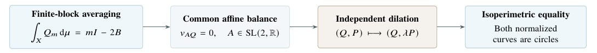
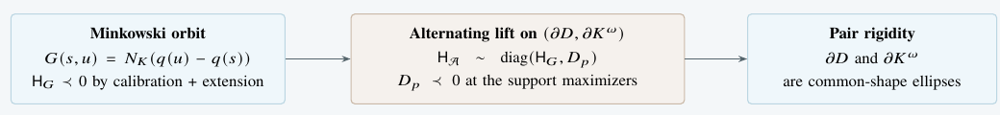

Finite-orbit variational rigidity characterises homothetic ellipses, with quantitative obstructions for all other convex pairs. The self-Minkowski billiard integrability is resolved without symmetry or positive-curvature assumptions.
Geometric Analysis
Downloadable summary PDF: open PDF.
The pair theoremTheorem 1.1
Let \(Q,P\subset\R^2\) be smooth strictly convex closed curves of positive curvature. For finite physical alternating segments with at least one internal vertex, the following conditions are equivalent: \[\underbrace{\HH_m\preceq0\ \text{for every segment}}_{\text{nonpositive fixed-endpoint second variation}} \quad\Longleftrightarrow\quad \HH_m\prec0\ \text{for every segment} \quad\Longleftrightarrow\quad \begin{cases} AQ=c_Q+r_QS^1,\\[-1pt] AP=c_P+r_PS^1. \end{cases}\] The normal form holds for some \(A\in\mathrm{SL}(2,\R)\), \(c_Q,c_P\in\R^2\) and \(r_Q,r_P>0\). These are independently translated homothetic ellipses: a common linear shape, with independent centers and sizes. No invariant foliation, first integral or reversibility is assumed.

The argument is carried out for independent convex pairs; no polarity relation is imposed at this stage.
Write \(\omega(x,y)=\det(x,y)\). Successive vertices lie alternately on \(Q\) and \(P\), and the two-step chord across each vertex is a positive multiple of its oriented tangent. These physical configurations are critical points of \[\mathcal A=\sum_i\bigl[\omega(q_i,p_i)+\omega(p_i,q_{i+1})\bigr].\] With endpoints fixed, its Hessian is tridiagonal. In arclength coordinates the nearest-neighbor coefficients are \(b_j>0\). Extending a segment by one vertex excludes a nonzero kernel whenever all finite Hessians are semidefinite, giving the strictness in the theorem.
Let \(X\) be the disjoint union of the two physical phase components, with finite invariant measure \(\mu\). For the appropriate edge Lagrangian \(L\), set \[I=\int_X(L_{11}+2L_{12}+L_{22})\dd\mu, \qquad B=\int_X L_{12}\dd\mu>0.\] The variation equal to \(1\) at the \(m\) internal vertices and \(0\) at the endpoints has second variation \(Q_m\) satisfying \[\boxed{\ \int_XQ_m\dd\mu=mI-2B.\ }\] Thus \(Q_m\leq0\) for all segments implies \(I\leq0\) by dividing by \(m\). Only finite sums and measure invariance are used: neither ergodicity nor an infinite-orbit limit inside an integral is needed.
Writing \(\ell_C,A_C\) for perimeter and enclosed area, direct integration gives \[\begin{aligned} I&=\ell_Q\ell_P-v_Q\cdot v_P-2\pi(A_Q+A_P),\\ 2B&=\ell_Q\ell_P-v_Q\cdot v_P. \end{aligned}\] Here \(v_C=\int_C(\cos 2\theta_C,\sin 2\theta_C)\dd s\) is the second tangent moment, with \(\theta_C\) the tangent angle. For fixed weights with \(\xi_0=\xi_{m+1}=0\), the same argument gives \[\int_X Q_{m,\xi}\dd\mu =(I-2B)\sum_{j=1}^m\xi_j^2 +2B\sum_{j=1}^{m-1}\xi_j\xi_{j+1}.\]
Minimizing \(\operatorname{Per}(AQ)\) over \(A\in\mathrm{SL}(2,\R)\) balances the tangent distribution: \(v_{AQ}=0\). Apply the same map to both curves and relabel them \(Q,P\). Independently dilating \(P\) multiplies the action by a positive scalar and preserves Hessian inertia. Consequently, \(I\leq0\) applies for every \(\lambda>0\): \[\lambda\ell_Q\ell_P\leq2\pi(A_Q+\lambda^2A_P).\] Minimizing after division by \(\lambda\) yields \[\ell_Q\ell_P\leq4\pi\sqrt{A_QA_P}.\] The two Euclidean isoperimetric inequalities give the reverse bound. Equality holds for each curve separately, forcing both to be circles in the balanced coordinates. Independent scaling is the extra freedom that closes the two-curve argument.
In the same perimeter-minimizing normalization, define \[\Gamma=\frac{\ell_Q\ell_P}{4\pi\sqrt{A_QA_P}}\geq1.\] Equality characterizes the classified elliptic pairs. If \(\Gamma>1\), Proposition 4.3 detects a positive Hessian direction on a nonempty open set of positive physical measure whenever \[\boxed{\ \Gamma\cos\frac{\pi}{m+1}>1.\ }\] After the further equal-area scaling \(P\mapsto\sqrt{A_Q/A_P}\,P\), the test variation is the first discrete Dirichlet mode: \[\xi_j=\sin\frac{\pi j}{m+1},\qquad \xi_0=\xi_{m+1}=0.\] The smallest integer meeting this sufficient condition obeys \[m_{\mathrm{sine}}(1+\varepsilon) =\frac{\pi}{\sqrt{2\varepsilon}}+O(1),\qquad\varepsilon\downarrow0.\] This improves the constant-variation bound \(m>\Gamma/(\Gamma-1)\). Optimality concerns phase-independent weights in this averaged form, not the shortest actual positive-direction orbit. There are \(m\) internal vertices and \(m+2\) vertices in total.
From continuous invariant graphs to Minkowski rigidity
For a smooth convex unit ball \(K\) with \(0\in\operatorname{int}K\) and a smooth convex table \(D\), the gauge and billiard generating function are \[N_K(x)=\inf\{r>0:x\in rK\},\qquad G(s,u)=N_K\bigl(q(u)-q(s)\bigr),\quad q(s)\in\partial D.\] Total integrability means a full foliation of the entire non-grazing phase annulus by continuous invariant essential graphs over the boundary coordinate. The billiard map is single-valued and invertible there; the gauge need not be reversible.
For \(S=-G\), convexity gives the weak twist inequality \(S_{12}\leq0\), even before positive curvature is known. Each continuous invariant graph admits constants \(c,\alpha\) and a periodic \(U\in C^1\) such that \[S(s,u)\geq\alpha-U(s)+U(u)+c(u-s),\] with equality on the graph. Summation telescopes: every finite graph orbit minimizes the \(S\)-action among admissible configurations with the same lifted endpoints and number of edges. Hence its \(G\)-Hessian is nonpositive.
The proof uses the order of the graph and an envelope argument, not its derivative. Once strict twist holds, endpoint extension upgrades the finite Hessians to definite ones. A full foliation therefore supplies the variational sign along every orbit, not just a selected family.
Suppose the table curvature vanished at a point with tangent \(T\). The one-vertex maximizing condition would give, for incoming and outgoing chords \(v_-,v_+\), \[D^2N_K(v_-)[T,T]+D^2N_K(v_+)[T,T]\leq0.\] Both terms are nonnegative by convexity, so they vanish. The full foliation supplies every inward direction; homogeneity and the planar gauge-Hessian structure then force \(D^2N_K=0\) on an inward half-plane. The gauge is linear there, implying \[N_K(T)+N_K(-T)=0,\] contrary to positivity on nonzero vectors. Thus \(\partial D\) has everywhere positive curvature. For \(D=K\), this also establishes the metric curvature needed below. For an independent metric ball, strong convexity remains a hypothesis of the classification.
Exact polar reductionSection 6
For \(K^\omega=\{p:\omega(p,x)\leq1\ \text{for every }x\in K\}\) and a parametrization \(p(t)\) of \(\partial K^\omega\), the support identity is \[N_K(v)=\max_{p\in K^\omega}\omega(p,v),\qquad G(s,u)=\max_t\bigl[\omega(q(s),p(t))+\omega(p(t),q(u))\bigr].\] Eliminating the polar vertices gives the Minkowski action exactly. In the positively curved setting, this is a global phase correspondence: the two-step alternating map is the Minkowski billiard map.

If \(\HH_{\mathcal A}=\left(\begin{smallmatrix}A&C\\ C^\top&D_p\end{smallmatrix}\right)\), then \(\HH_G=A-CD_p^{-1}C^\top\). The negative-definite polar block \(D_p\) makes nonpositivity, and strict negativity, equivalent for the full and reduced Hessians.
Assume \(\partial K\) is smooth and positively curved; the smooth convex table \(D\) need not initially have positive curvature. Theorem 1.3 states that total integrability is equivalent to the normal form
\[\begin{gathered} N_K(x)=|Bx|+\beta\cdot Bx,\\ BD=c+R\Ball,\qquad |\beta|<1, \end{gathered}\] Here \(\Ball\) is the closed unit disk, \(B\) is an orientation-preserving linear isomorphism, \(c\in\R^2\) and \(R>0\).
The linear term is essential. In \(y=Bx\) coordinates it contributes only \[\sum_i\beta\cdot(y_{i+1}-y_i)=\beta\cdot(y_m-y_0)\] to a fixed-endpoint action. It changes neither the reflection law nor its Hessian. Thus the normalized dynamics is the round-disk billiard, whose constant angular increments give a full invariant-graph foliation. Reversibility forces \(\beta=0\); without it, nonzero \(\beta\) gives genuine integrable metric–table pairs.
Now set \(D=K\). Assume only that \(K\) is a compact convex body with \(C^\infty\) boundary and \(0\in\operatorname{int}K\). For its billiard map on the full non-grazing annulus, Corollary 1.4 gives
\[\begin{gathered} \text{total integrability}\quad\Longleftrightarrow\\[2pt] N_K(x)=\sqrt{x^\top Hx},\qquad H=H^\top\succ0. \end{gathered}\] Equivalently, \(K\) is an ellipse centered at the origin.
Automatic curvature first makes the general classification applicable. The self condition then requires a translated disk and its polar to be disks in the same normalized coordinates. A translated disk has circular polar only when its center is the origin; this removes the translation and forces \(\beta=0\).
No symmetry, reversibility or positive-curvature assumption is imposed in this self case. In the smooth convex billiard-map formulation, the corollary answers the self-Minkowski question recorded as Question 2 in Open problems in billiards and quantitative symplectic geometry (2026): total integrability in the gauge’s own unit ball forces an inner-product gauge.
height .45pt
Source. R. Jenkinson Alvarez, Variational rigidity for alternating symplectic billiards: Theorems 1.1–1.3, Proposition 4.3, Lemmas 5.4–5.5 and 6.7, and Corollary 1.4. Statements retain the manuscript’s hypotheses and notion of total integrability.
Ellipse: table and gauge become a round disk together under a linear change of coordinates.